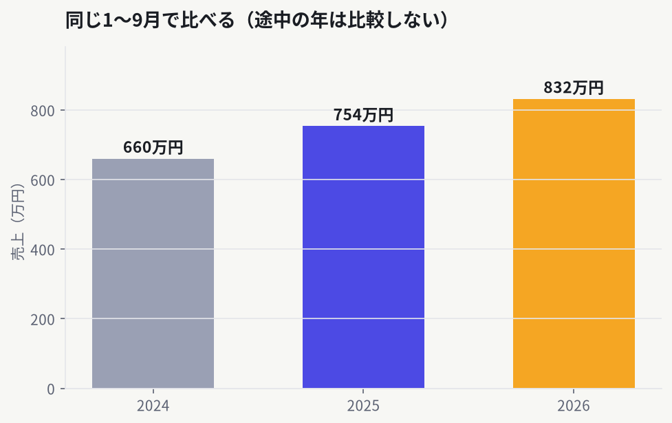
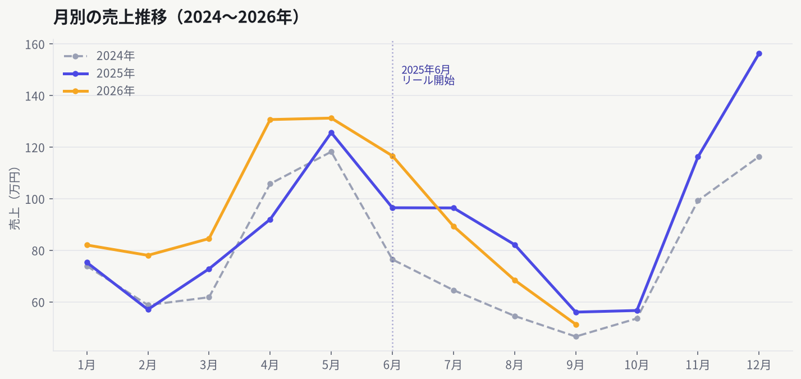
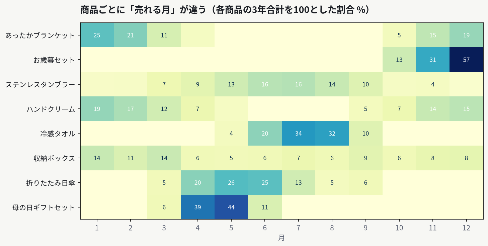
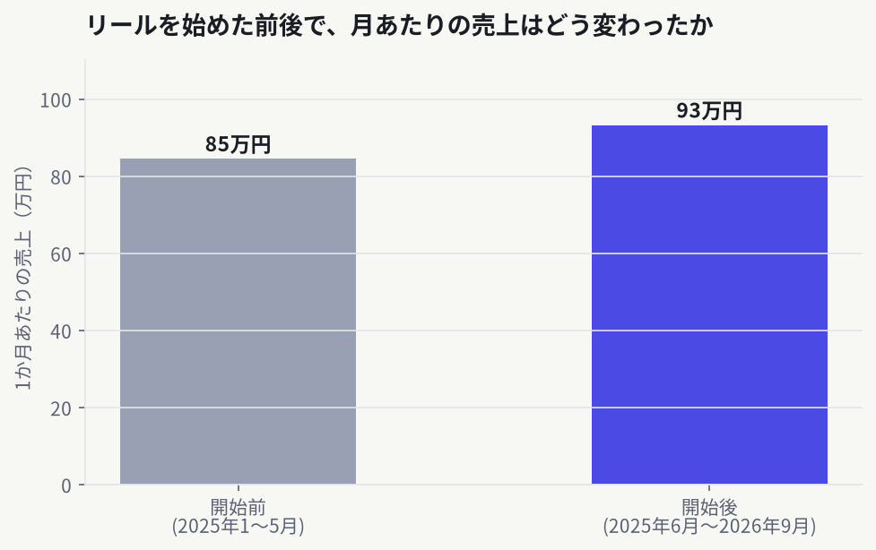

その1
「新しいチャットを開くたび、はじめまして」を卒業する——AIの記憶の話
Gensparkを使い始めて最初につまずくのが、実はここです。チャットを変えると、さっき説明したことを覚えていない。 同じ背景説明を何度も書き直す。これが面倒で、せっかくの道具から離れてしまう——そういう人が多いはずです。
公式の答えははっきりしています。 チャットをまたいだ記憶を担当するのはセカンドブレイン という機能です。大事なのは「どのチャットで効くか」が決まっていることです。
場所 チャットをまたぐ記憶
スーパーエージェント（セカンドブレイン接続時） 効きます Hubの中のプロジェクト同士 効きます 通常のAIチャット 効きません
ここが落とし穴です。通常のAIチャットは、仕様として覚えない と公式ヘルプに明記されています。ただし、チャット自体は「プロジェクト」として保存されるので、消えるわけではありません。覚えているかどうかと、残っているかどうかは別の話 です。
設定は5分で終わります。
セカンドブレインのページを開く
メールかカレンダーを1つだけ つなぐあとはいつもどおり、スーパーエージェントに指示する
最初から全部つながなくて大丈夫です。公式も「まずはメールかカレンダーを1つ」と案内しています。無料プランから使えます。 会議の音声を拾う専用の機器もありますが、それは無くても使えます。
私の場合、「Genspark AI ワークスペース 6.0」を使うようになってから、長い説明を書かなくなりました。 ひととおり簡単に伝えたら、あとは探してきてもらう。以前は、探し方まで自分で言葉にしていたのが、そこが要らなくなった——これが実感としていちばん大きいところです。
50代にとっては、この差が効きます。書く量が減ると、頼むまでの腰が軽くなる。「説明するのが面倒だから使わない」が「ひとこと言ってみようか」に変わる のが、道具が身につくかどうかの分かれ目だと思っています。
※ 仕様は変わることがあります。最新は公式ヘルプ（セカンドブレイン） と公式ヘルプ（AIチャット） でご確認ください。当サイトはGensparkの非公式ファンメディアです。
その2
エクセルの売上データをAIに読ませたら、「次は何を売るか」が分かるようになった
もうひとつ、効果が大きかったのがこれです。私の勤め先のオンラインショップの売上データ——日付・商品名・価格・販売個数 が入ったエクセルを、AIに読ませてまとめてもらっています。
対象は3年分 です。2024年 （まだ特に関わっていなかった年）、2025年 （Instagramのリール動画を上げ始めた年）、そして2026年の今月まで 。これを渡して、年次の推移・月別の売れ方・商品ごとの違いを並べてもらいました。
手作業では、たぶんやりません。 3年分を商品別に並べて、月ごとに比べて……という表を自分で作る手間を考えたら、最初から無理だと思っていました。AIに渡せば、その手間が丸ごと無くなります。
図について： ここに載せている図は、説明のために作ったサンプルデータ（架空の商品・架空の数字） です。実際の会社の売上は一切出していません。数字は違っても、「見えるようになること」は同じ だと思って読んでください。
分かったこと① 年ごとの推移が見える
ただし、途中の年をそのまま比べてはいけません。2026年はまだ9月までしかない ので、いま並べると必ず少なく見えます。「同じ1〜9月どうし」で比べる ——これに気づけるだけで、判断の精度が変わります。

同じ「1〜9月」で切り出して比べる。途中の年は、そこまでで揃えないと意味がありません。
分かったこと② 月ごとの「山」がある
売上は1年を通して平らではありません。4〜5月と11〜12月に山 が来て、8〜10月が谷 になる。この形は、3年分を重ねると、はっきり見えてきます。

3年分を重ねると、毎年同じところに山と谷が来ていることが分かる。
分かったこと③ 商品ごとに「売れる月」が、全然ちがう
ここがいちばん面白いところでした。同じ店の商品でも、売れる季節はバラバラ です。同じ「冬」でも12月に集中するものと、1月まで伸びるものがある。季節商品は、上位3か月で年間の6〜8割を稼ぐ ものもありました。

各商品の3年合計を100としたときの、月ごとの割合。濃いところが「売れる月」。
分かったこと④ いちばん効いたのは、ここでした
まとめを見て、いちばん助かったのは数字そのものではなく、「次にどこへ手を入れるか」が決められるようになったこと です。月別の販売個数を見ると、こう判断できるようになりました👇
今月はこの商品を売り込む ——もう売れ始めている月なので、広告や紹介をここに寄せる来月はこっちに切り替える ——来月が山になる商品に、先に手を打つこの商品は今月は動かさない ——谷の月に力を入れても、戻りが小さい
商品の数が多いと、「なんとなく」で選ぶしかありませんでした。それが、月ごとの数字で選べるようになる。 売上を上げる話というより、迷う時間を減らす話 だと思っています。
もうひとつ、2025年のリールとの重なり
2025年にInstagramのリール動画を上げ始めていて、それが売上に影響したかどうかは、正直まだ分かりません。数字の上ではリールを始めた時期と、伸びた時期が重なって見えます 。

始める前と後で、1か月あたりの売上はどう変わったか。
ただ、ここは慎重に書きます。 時期が重なっているだけで、リールが原因だったとは言えません 。同じ時期に値段も変えていれば、季節も動いています。「重なっている」までしか言えない ——これが、AIに任せるときに私がいちばん気をつけているところです。AIは、聞けば何でもそれらしい理由を付けてくれます。 因果を決めるのは、最後は人間です。
頼み方は、これだけです
日付・商品名・価格・販売個数が入ったエクセルをそのまま渡す
「年ごとの推移」「月ごとの売れ方」「商品ごとの季節の違い」の3つを頼む
図にして出してもらう（数字の表より、図のほうが早く分かります）
「この商品は、何月に売れている？」と1つずつ聞いて、来月の準備に使う
エクセルの作り方も、特別なことは要りません。ふだん売上管理で使っている表が、そのまま使えます。
※ 「同じ1〜9月で比べる」「相関と因果は別」の2点は、AIの答えをそのまま使わず、必ず自分で確かめてください。当サイトはGensparkの非公式ファンメディアです。
その3
リール動画は、「どこで何を見せるか」を任せると撮るだけになる
私がいちばんAIを使っていたのは、実は動画づくりでした。Instagramのリール動画 です。2025年から上げ始めて、いまも続けています。その作り方で、いちばん助かっているのは「構成」と「概要欄」 の2つです。
私がやっていたのは、これだけです。
商品や季節から、ざっくりしたイメージを書いて渡す
動画の構成（どこで何を見せるか、どう流すか）を考えてもらう
概要欄の文章を作ってもらう
撮影と編集、そして出すかどうかの判断は、私のまま です。ここは渡していません。
いちばん時間を使っていたのは、撮影でも編集でもありませんでした。 「どこで何を見せるか」を決めることです。ここを任せると、私は言われたとおりに撮るだけになります。考える時間が消える ので、1本あたりの負担が変わりました。
概要欄も同じでした。毎回30分ほど悩んでいた のが、いまは出てきたものを少し直すだけです。
「ちゃんとした台本を書いてから頼もう」と考えなくて大丈夫でした。ざっくりでいい。 返ってきたものを見て「ここをこう」と直すほうが、早いです。
※ 構成と概要欄は任せていますが、撮影・編集・公開の判断は自分でしています。当サイトはGensparkの非公式ファンメディアです。
その4
GrokがXに強いのは、性能ではなく「立っている場所」の差だった
「GrokはXの投稿を拾うのがうまい」——これは、性能の差だと思っていました。調べたら、違いました。
Grokは、Xと同じ会社の中にいます。 だから、検索の入口が内側にある。他のAIは、外から見に行っています。同じ「検索」でも、立場が違う。それだけのことでした。
2026年2月、SpaceXがxAIを買収しました。そのあと7月に、GrokとXとデータセンターをSpaceXへ統合して、社名はSpaceXAI に変わっています。
では、他のAIはXを見られないのか。 ここは正確に書いておきます。見られないのではなく、読みにくい というのが正しいところです。私も、他のAIでXのプロフィールページを開いて、投稿を読むことができました。
ただし、限界がありました。返信やメンションの一覧 を読む機能は、私の環境ではまだ開放されていませんでした（「private beta」という表示で止まりました）。
道具の強さは、性能より「どこにいるか」 で決まるのだと思います。では、Gensparkはどこにいるのか。私は、これを「自分の仕事の中」 だと思っています。私のファイル、メール、カレンダー、会議の記録。そこに繋がっているから、調べものをして終わりではなく、資料を作るところまで進みます。
いまXで何が話題かを知りたい → Grok
自分の仕事を丸ごと任せたい → Genspark
優劣ではなく、置き場所の話です。
※ 買収・社名変更は2026年2月と7月の公式発表にもとづきます。他社AIの欄は一般的な傾向で、機能が追加されれば変わります。当サイトはGensparkの非公式ファンメディアです。
その5
モデルの倍率が5xから4xに下がっていた——でも、私にはまだ関係がなかった
Gensparkのモデル一覧に、Claude Opus 5.5 が入っていました。「New」が付いていて、すでに選ばれた状態です。名前の横の数字はクレジットの消費倍率 を示すもので、こうなっていました。
Claude Opus 5.5（New）… 4x
Claude Opus 5 … 5x
Claude Sonnet 5 … 2x
Claude Haiku 4.5 … 1x
新しいほうが、安い。 5xから4xなので、ちょうど2割下がっている計算になります。
ところが、私はこれを実測できませんでした。理由は契約時期です。公式ヘルプには、AIチャットのコアモデルはクレジットを消費しないと書かれています。そして2026年9月18日より前から有料プランを続けている人は、12月31日までクレジットを気にせず使える という案内もあります。私は8月14日からの契約なので、こちらに当てはまります。
つまり、画面に4xと出ていても、私には請求されていません。測る対象が、そもそも存在しなかった ということです。
倍率の話が効いてくるのは2027年1月1日から です。だから今やるべきことは、倍率をにらむことではなく、任せ方のほうを確かめておくこと だと思っています。どの作業なら丸ごと渡せるのか。うまくいかないときに、どう言い直すのか。それを体で覚えておけば、無料で使える期間が終わったあとも、同じ仕事を少ないクレジットで回せます。
※ 画面で見た倍率と、公式ヘルプの記載にもとづきます。性能の感想は書いていません（まだ試していないため）。仕様は変わることがあります。当サイトはGensparkの非公式ファンメディアです。